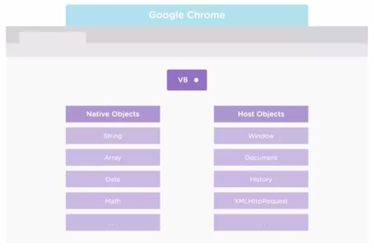

Node.js
Briefing on an Asynchronous Technology
With JavaScript's continued popularity within the realm of web development, new libraries are regularly introduced. Other technologies, such as Bootstrap, expedites the development process, allowing well-designed and functional sites to be rolled out quicker than ever before. Node.js, initially released in 2009, changes the face of the web, as web applications with real-ime, two-way connections because possible.
Ryan Dahl, the creator of Node.js, set out to create web applications with push capability. Most existing technologies only supported exchanges initiated by the client. The goal of Node.js was to establish a two-way connection between the application and the client where the two nodes could communicate freely and allow the server, essentially, to react to events and send events where necessary.
Technology
Node.js relies heavily on Google Chrome's V8 JavaScript engine. Node.js is a set of libraries on top of V8 that allows it to perform networking-related tasks.
A significant design feature that contributes to the power of Node.js is being designed to work outside the browser. Where JavaScript was notorious for being a client-side web technology, Node brought with it server-side functionality.

Non-Blocking I/O
As described, Node.js was developed as a solution for creating asynchronous applications. Communication was initiated by the client and tasks would be handled from beginning to end before the server would begin completing the same steps for another task. With this design, processes would be held up as any particular event occurred. Therefore, the solution was to design non-blocking inputs and outputs.
Node.js provides a non-blocking solution. One an event is created, a callback is registered that would return to the event. This allows the application to continue working on other tasks and then return to the tasks via the callback when it is ready.
Great, so what does this mean?
Node can be a handful upon initial understanding, so let's break it down:
Business with Traditional Technologies

Let's say we have a business, Nookington's, with an estranged gasmask wearing salesman. In the traditional business model, once the salesman makes a sale, he must wait for funds from the sale to be received before he can work on an other sale. While this is effective in ensuring that the process of selling an item and then receiving payment is completed, it isn't efficient if other customers want to shop at Nookington's.
To increase the sales under the traditional business model, the owner would have to hire more workers (or, in a technology-sense, apply more processing power). This solution is costly. There must be a way to make gasmask salesman more efficient.
Business with Node
The solution is to use Node. Node places a service desk at Nookington's. The service desk is used for customers ready to pay (similar to the callback). So, the salesman can continue to service other customers and when purchasers are ready to pay, he can simply slide over, process their payment and continue to service others.
Node is powerful in this same way. When an application will be receiving input from many users simultaneously, it serves as a way to react actively and without delay. Node can serve well for real-time applications with ever-changing data, such as stock brokers' dashboards or tracking 'Likes' on an image.
Node.js is a powerful tool that will further the revolution of web development. Using Javascript outside the browser with Node and the powerful connectivity it provides to APIs, along with the server-side functionalities will certainly lead to the development of some of the most functional and responsive applications to date. The stable release dropped on February 6, 2015; now's the time to get coding.